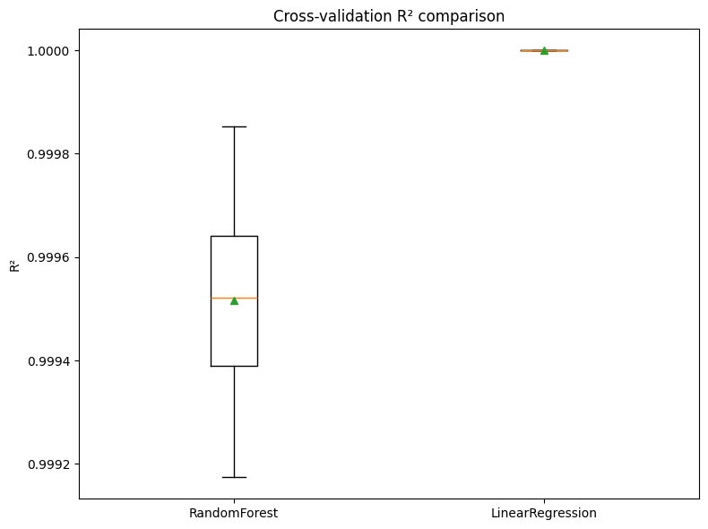
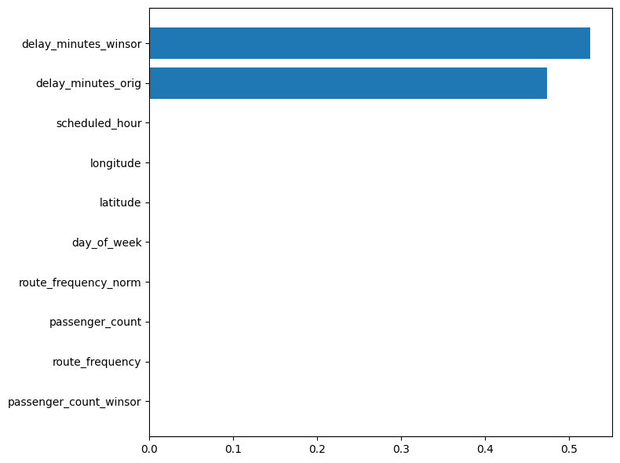
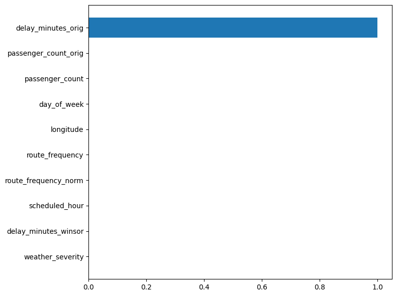

Multi-model Explainability Report
Cross-validation Comparison

RandomForest
Cross-validation (R²) summary
Mean R²: 0.9995 Std: 0.0002
| fold1 | fold2 | fold3 | fold4 | fold5 |
|---|
| 0.9996 | 0.9999 | 0.9994 | 0.9992 | 0.9995 |

| feature |
mean_abs_shap |
| delay_minutes_winsor |
15.373781 |
| delay_minutes_orig |
14.325157 |
| scheduled_hour |
0.044293 |
| day_of_week |
0.041936 |
| longitude |
0.038967 |
| latitude |
0.029519 |
| route_frequency_norm |
0.029441 |
| route_frequency |
0.022566 |
| weather_severity |
0.021771 |
| passenger_count |
0.020944 |
| passenger_count_winsor |
0.018557 |
| passenger_count_orig |
0.017839 |
| is_weekend |
0.013007 |
LinearRegression
Cross-validation (R²) summary
Mean R²: 1.0000 Std: 0.0000
| fold1 | fold2 | fold3 | fold4 | fold5 |
|---|
| 1.0000 | 1.0000 | 1.0000 | 1.0000 | 1.0000 |

| feature |
mean_abs_shap |
| passenger_count |
0.0 |
| latitude |
0.0 |
| longitude |
0.0 |
| scheduled_hour |
0.0 |
| day_of_week |
0.0 |
| is_weekend |
0.0 |
| weather_severity |
0.0 |
| route_frequency |
0.0 |
| route_frequency_norm |
0.0 |
| passenger_count_orig |
0.0 |
| passenger_count_winsor |
0.0 |
| delay_minutes_orig |
0.0 |
| delay_minutes_winsor |
0.0 |